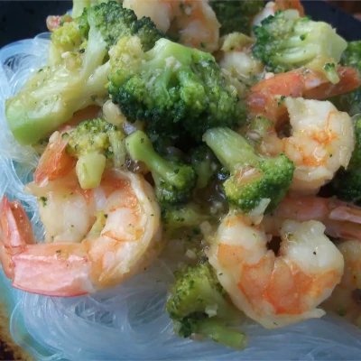

Capcay

A yummy Chinese - Indonesian vegetable dish that you'll find in the
restaurant all over Surabaya. It's a great pescetarian dish, too. We
usually serve it with brown rice and fried tofu. You can leave out the
prawns and the taste is still great, or even substitute for chicken.
Ingredients
- 3 tablespoons vegetable oil
- 4 cloves garlic, minced
- 1 onion, thinly sliced
- 10 ounces peeled and deveined medium shrimp
- 1 head bok choy, chopped
- 1 1/2 cups chopped broccoli
- 1 1/2 cups chopped cauliflower
- 1 large carrot, thinly sliced at an angle
- 3 green onions, chopped
- 2/3 cup water
- 2 tablespoons cornstarch
- 2 tablespoons fish sauce
- 2 tablespoons oyster sauce
- 1 teaspoon white sugar
- 1/2 teaspoon ground black pepper
- salt to taste
Cooking Instructions
-
Heat vegetable oil in a large saucepan over medium heat. Stir in
garlic and onion; cook and stir until onion has softened and turned
translucent, about 5 minutes. Add shrimp, bok choy, brocoli,
cauliflower, carrot, and green onion. Pour in water, cover, cook until
shrimp is no longer translucent in the center and vegetables are
tender, about 15 minutes
-
Dissolve cornstarch into fish sauce in a small bowl. Stir into the cap
cay along with oyster sauce, sugar, and pepper; stir until thickened.
Season with salt before serving.